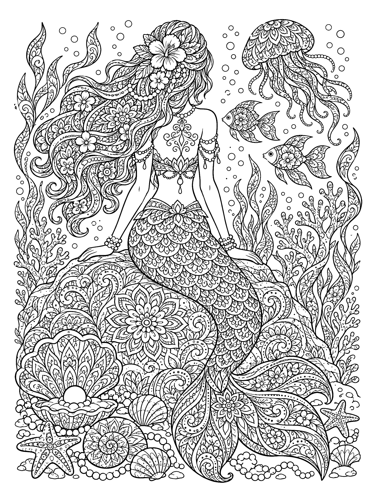
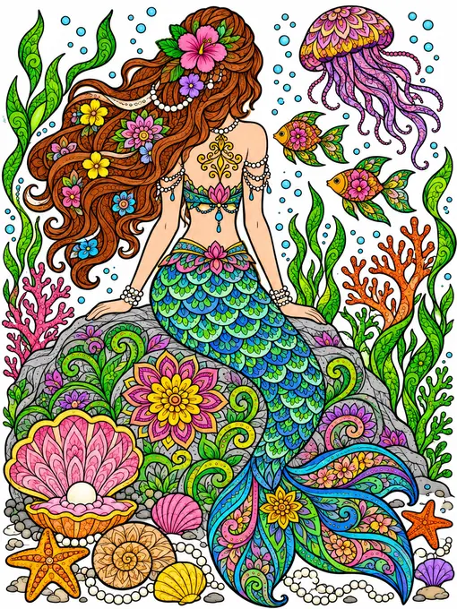

Mermaid Tail Coloring Page
Intricate Free printable · Letter and A4
A mermaid seen from behind sitting on a rock, with long flowing patterned hair and an ornate scale-patterned tail, shells and pearls around.

Color ideas
Here is one way to color it. Good colors to pull out: brown, tan, orange, forest green, magenta.
Want this small colored picture printed in the corner of the page as a guide? Open the print options and switch on Color guide.
About this page
Dense patterns with lots of small spaces to fill. Made for teens and adults who like a long, relaxing page.
It prints on one sheet of regular paper. For markers, use heavier paper or put a spare sheet underneath. In the print options you can also print two per sheet, switch to light gray lines, or add a name line.